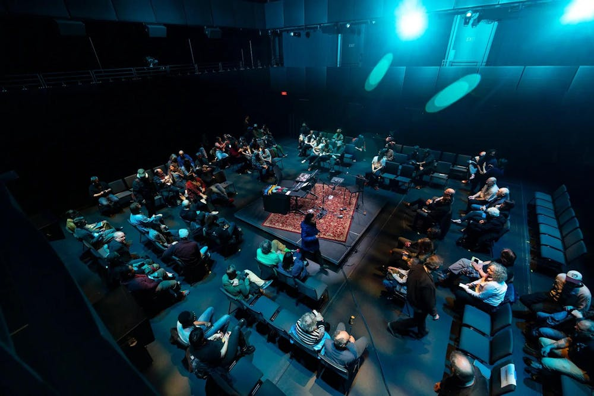
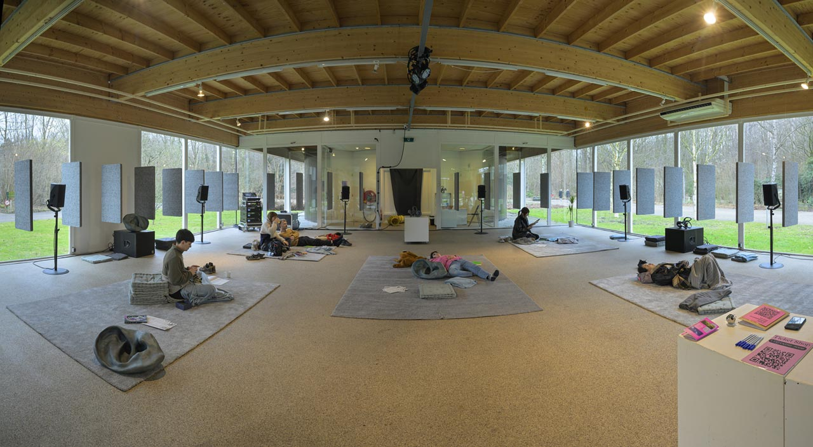

Information Adjustment and the Cybernetics of Afrofuturism, 2025-Current
Information Adjustment and the Cybernetics of Afrofuturism is a series of Spatial Audio compositions and installations centered around the cybernetics of afrofuturism. For me these compositions explore an anthology of sound related to the black experience and abstract them into an imagined futurist black world through synthesis, sampling, granular and various other sound design and spatialization techniques. Through my performance practice I explore the cybernetic natures of interacting with electronic controllers to control the systems of music creation as extensions of the body, and these performances as ritual, echoing the hybrid logic of cybernetic systems. As Kodwo Eshun observes in The Last Angel of History, “Afrofuturism is concerned with the alienation of black people in the past and the projection of black people into the future.”This framing resonates closely with the arguments in the Cyberfeminist Manifesto, which asserts that technology and code are not neutral, but are tools that can be reimagined and repurposed to challenge structural alienation and reclaim agency within a technological landscape. Just as cyberfeminism calls for the reconfiguration of machines, networks, and bodies as sites of possibility, my work investigates how electronic instruments and spatialized sound can become mechanisms for reimagining futurist Black subjectivities. The performer-system relationship embodies the manifesto’s call to rethink the ways humans, technology, and power intersect, making sound itself a vector for speculative, emancipatory futures.
The first composition for this series was installed at Residual Noise: Spatial Audio Concert #2 at Ambisonic Cube, Main Hall, The Lindemann Performing Arts Center, Providence, RI. The piece was composed in Reaper for playback on the 43.4 speaker array.
"Femi Shonuga-Fleming used ambisonics and spatial audio to craft abstract sonic worlds rooted in Afrofuturism and ancestral memory. The piece, “Information Retrieval and the Cybernetics of Afrofuturism,” invited deep listening as a ritual, honoring both future possibilities and Indigenous groundings." - The Brown Daily Herald "Residual Noise uses sonic and spatial art to create unique, immersive experience: The latest in the IGNITE Series, the concert was part of a weekend-long festival."

The most recent composition was commissioned by Sonic Acts, for their 2026 Biennial Show, and composed for playback on their 8.2 channel speaker array.
"Information Adjustment and the Cybernetics of Afrofuturism by Femi Shonuga-Fleming moves like a river – full of slow eddies and sudden surges – through space and imagined moss floors. The work traces nonlinear histories of Black and Indigenous organic technology, grounding bodies through deep listening as ritual. Drums pulse; jazz loosens into continuous kaizen, transcendence accumulating through interruption and return. Field recordings and synthesised tones hold vibration like breath, with the speakers functioning as ritual objects." - Sonic Acts

My original description from the commision:
Information Adjustment and the Cybernetics of Afrofuturism Raumkompositionen
Sound is a river that wades slowly or rushes rapidly, flowing forever, without time, beyond its boundaries, in any environment. This composition is an exploration of stretched ritual timelines along hollow moss floors using spatial audio and ambisonics techniques. It is a conversation on the nonlinear history of organic technology in black and indigenous culture. The practice of deep listening is the ritual that grounds the collection of bodies into the dirt beneath our feet. It places the inevitable questions of existence, research and documentation into an impossible codex protruding beyond existing architecture. The drum is central to the music. Jazz is more than its predefined complexity. This is a continuous practice to push transcendental experiences through interruption of ambiance, as a kaizen. The piece uses field recordings and synthesized audio to explore the organic and ephemeral nature of the continuity of sound through the lens of afrofuturism and experimental electronics. The speaker is a representation, a totem, a shrine, a ritual object in translating sound.